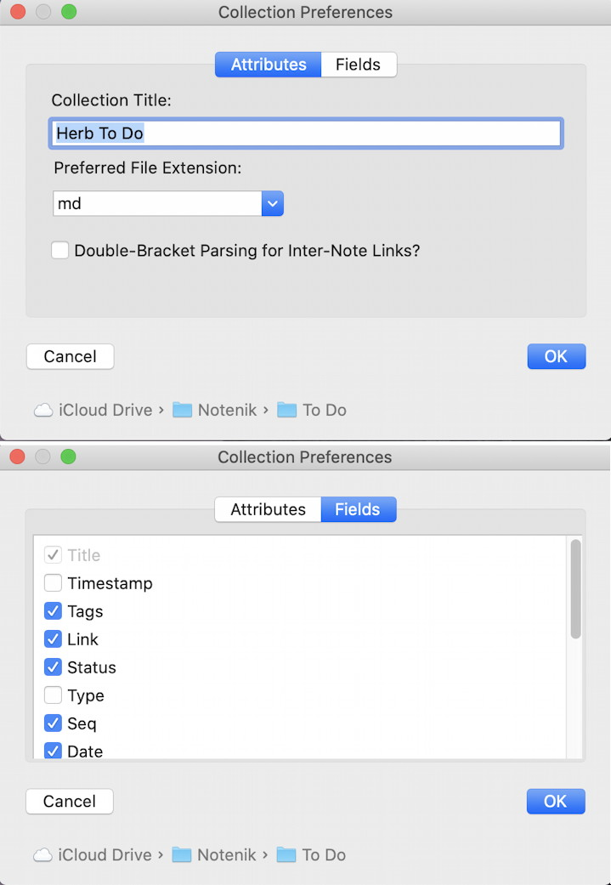

Notenik Project # 1: Create a Simple Collection of Notes
Published 14 Nov 2019
Notenik is a free and open-source Mac application that you can use to track and publish all sorts of notes on any topic.
This post is the first in a series designed to gradually explain the use of Notenik for increasingly complex and sophisticated tasks.
See the Notenik User Guide for complete descriptions of all of Notenik's many features.
Today we're going to use Notenik just to create a basic Collection of Notes about anything that might interest you.
Step 1: Download Notenik from the Mac App Store
Follow this link to easily locate Notenik in the Mac App Store, then press GET and OPEN to install and open the application.
The first time you open Notenik, it will show its Collection of Help Notes. This is provided as reference, but is not meant to be edited. Leave this window open for now.
Step 2: Create a New Collection
Within Notenik, Notes are always stored within Collections, and you may have as many different Collections as you desire.
Each Collection is stored on disk as its own folder, and each Note within a Collection is stored as a file within that folder.
You get to decide where to store your Collection(s), and you can always navigate to them within the Finder. (Hint: Store a Collection in your Dropbox folder or in iCloud Drive if you'd like to sync it to the cloud and to other devices.)
To create a new Collection, select New from the File menu. This action will open up a standard Mac window for selecting a folder. Use the standard New Folder button in the lower left corner of this window to create an empty folder for your new Collection, then select that newly created folder (all within the same window) and hit the Open button.
Step 3: Indicate Your Collection Preferences
The next thing you will see is a window allowing you to specify certain attributes for your new Collection.
The Collections Title will be formed from the folder path containing this Collection. Feel free to tweak this if you'd like.
Each Note file is an ordinary text file, and can be opened using any text editor, in addition to being editable within Notenik. Depending on what application you might wish to be the default text editor for your notes, you may wish to pick some special file extension to be used. If you don't care about this, or this doesn't make any sense to you, then feel free to just ignore this whole paragraph and leave the Preferred File Extension set to txt.
Next select the fields you would like to be made part of each Note. Every Note must have a Title and a Body, and the Tags and Link fields are commonly used, but feel free to use the checkboxes to select whatever fields would be most useful to you. (You can add additional fields later, so a minimal set is probably best to start.)
When you're done with this screen, click OK to continue.

Step 4: Add Some Notes
Your new Collection will be initially populated with a Note titled ‘Notenik’. Feel free to delete this later, but first you must add one or more of your own Notes to the Collection, so that it is not empty.
Click on the Plus Sign (‘+’) in the Toolbar to add a Note.
Enter a brief Title indicating the subject of the Note. (Each Note in a Collection must have a unique Title.)
Enter whatever you like in the Body of your Note. You may use the Markdown syntax to format the body of your Note.
If you've elected to use the Link field, and if you have some sort of URL you'd like to associate with this Note, then enter that Web address in the Link field.
Tags can be used to organize the Notes within a Collection. You may enter from zero to many Tags for each Note, and may enter one or more levels for each Tag. Separate different Tags with a comma or a semicolon, and separate different levels with a period.
When you're done with your data entry, hit the Display tab above the fields (next to the Edit tab), or the OK button in the Toolbar. Your Note will then be saved, and a formatted display of your Note will replace the Edit screen.
Add other Notes in the same way.
As you add Notes, they will appear on the List tab on the left side of your window, sorted by Title.
Step 5: Open Links
Later, when referencing your Notes, you may open a Link in your Web browser (Safari, for example) by hitting the Launch Link button in the Toolbar.
Note that you can also click on the Link field within the Display tab, but clicking here will open the linked webpage within the Notenik Display tab, rather than in your Web browser. When you're done viewing the linked webpage within Notenik, you can click on the Refresh button in the Toolbar to reload your Note within the Display tab.
Step 6: View the Tags Outline
If you have elected to enter Tags for your Notes, then you may click on the Tags tab (next to the List tab) to see your Notes arranged by their Tags. Notes appear on this tab within an outline view. You can open and close tags and sub-tags (if present) to reveal or hide various groups of notes.
Step 7: Adjust the Display Font
If you'd like to see your Notes displayed differently on the Display tab, then hit the Display Fonts button on the Toolbar. You can use the resulting screen to select a different font family, and can also adjust the font size. If you're familiar with CSS, then you can edit the resulting CSS code directly if you'd like.
When you're done, hit OK to see your changes take effect on the Display tab. (You may need to click on one or two Notes before the changes take effect.)
Step 8: Adjust the Edit Font Size
Use the bottom three commands under the View menu to adjust the size of the font used on the Edit screen, if you'd like it to be larger or smaller.
Note that font changes, on the Display tab and on the Edit tab, will affect the way all Collections are displayed within Notenik. Font settings cannot be made on a collection-by-collection basis.
Step 9: Make Your Collection Essential
If you'd like this Collection to be opened automatically the next time you launch Notenik, then choose the Make This Collection Essential command under the File menu. If you've specified an Essential Collection, then it will be opened automatically each time you open Notenik.
Step 10: Share Your Notes
Click on the Share button on the Toolbar to share a Note in an email, a text message, or via any of the other standard sharing tools available on a Mac. Notes shared in this fashion will just be formatted as plain text.
However there's also another sharing option, available under the Note menu. When you select Share here, you will see another screen that will present you with a number of sharing options.
- Share the body of the Note only, or share all of the fields;
- Share in the Notenik format, in Markdown, or in HTML (as either a fragment or a complete document);
- Send the resulting output to the Clipboard, so that you can then paste it somewhere else, or to a file whose name and location you will then get to specify.
After you've chosen the appropriate options, hit the OK button to complete the sharing.
Summary
Well, that's it! You've seen how you can use Notenik to create a basic collection of Notes to keep track of information on any topic that might interest you.
Hopefully you can find some uses for this most basic Notenik function.
In later projects we will move on to more sophisticated uses.